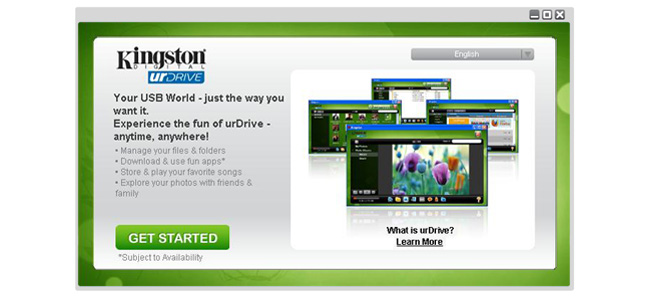
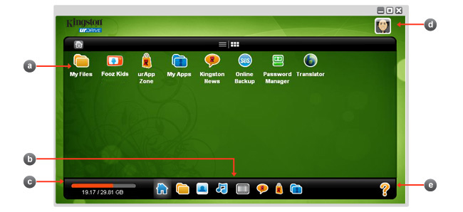
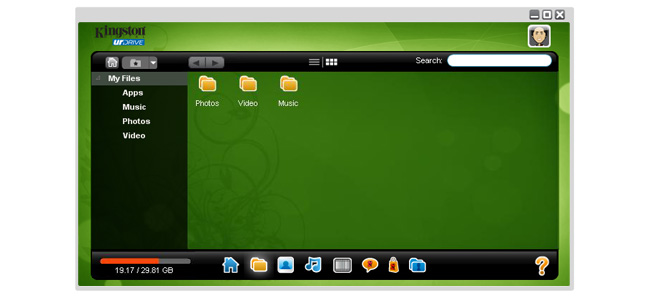
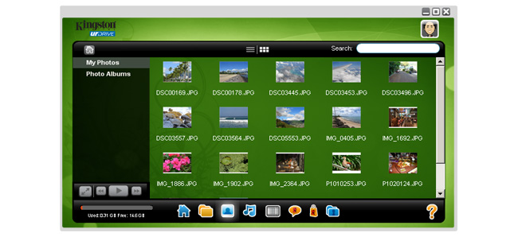
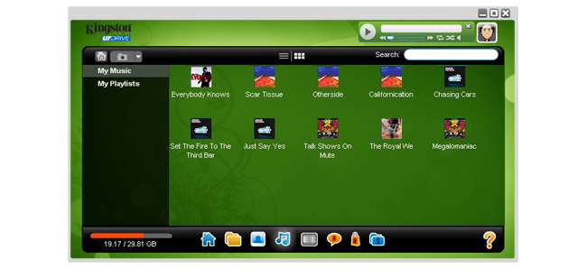
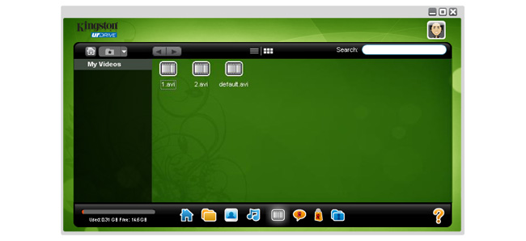
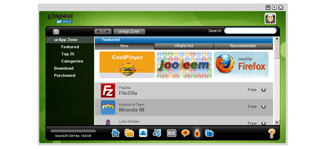
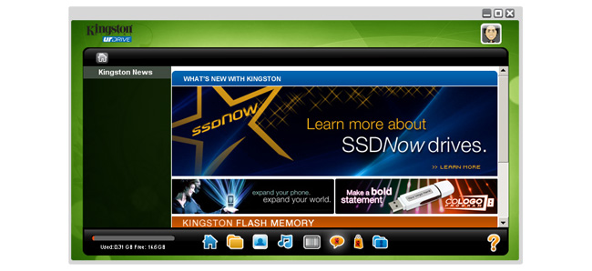
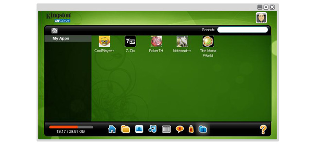
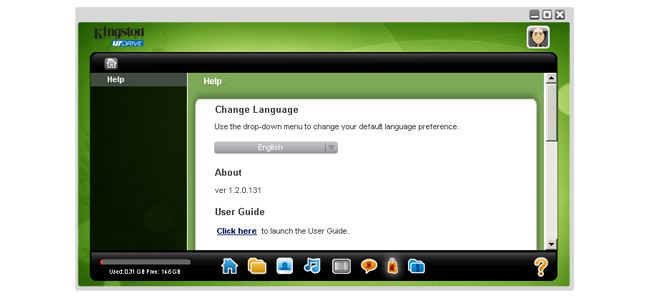

Hoş geldiniz

Hoş geldiniz ekranında, urDrive uygulamasının bir urDrive açıklamasını görüntüler ve bir tanıtım videosu içermektedir.
Kullanıcının tercih ettiği dil görünümüne geçmesine imkan tanıyan bir dil seçici bulunmaktadır.

Hoş geldiniz ekranında, urDrive uygulamasının bir urDrive açıklamasını görüntüler ve bir tanıtım videosu içermektedir.
Kullanıcının tercih ettiği dil görünümüne geçmesine imkan tanıyan bir dil seçici bulunmaktadır.

a. Ana Ekran: Çeşitli uygulamalara, dosyalara ve web sitelerine kısayolların bir listesini içeren masaüstü ekranı alanıdır.
b. Hızlı Erişim Yuvası: Dosyalarım, Fotoğraflarım, Müziğim, Videolarım, Neler Yeni, urAppZone ve Yardım gibi uygulamanın en altındaki ana özelliklere erişim için kullanılır.
c. Kapasite Ölçer: USB sürücüsünün mevcut depolama kapasitesini görüntüler.
d. urFooz Simgesi: urFooz hesabına oturum açabilir ve uygun urFooz avatar simgesini görüntüleyebilir.

Dosyalarım, USB sürücüsünde kayıtlı tüm dosya ve klasörleri görüntüler.

Fotoğraflarım, sürücünün kullanıcı fotoğrafı klasöründe kayıtlı JPEG resimlerini görüntüler.
Kullanıcının fotoğraf albümleri oluşturma ve slayt gösterisi biçiminde görüntüleme seçeneği olacaktır.

Müziğim, sürücünün kullanıcı müzik klasöründe kayıtlı MP3 dosyalarını görüntüler.
Kullanıcı, urDrive müzikçalarda çalınan dosyayı açarak ses içeriğini dinleyebilir.

Videolarım, sürücünün kullanıcı video klasöründe kayıtlı video dosyalarını görüntüler.
Kullanıcı, bilgisayarın varsayılan harici video oynatıcısını açan ilgili dosyayı açarak video içeriğini görüntüleyebilir.

urAppZone'da gezinin, uygulama veya içerik satın alın. urFooz kullanıcı hesabı oturum açma bilgileri gereklidir.

Neler Yeni bölümü, Kingston ve iş ortaklarının son ürün ve tanıtım içeriklerini içermektedir.
Özel teklifleri kaçırmamak için sıkça kontrol edin.

urAppZone'dan yüklenen uygulamalara gözatın ve başlatın.
Fotoğraflarımda görüntülenebilecek dosya türleri:
* desteklenmeyen dosya türleri Fotoğraflarımda görüntülenmez ancak Dosyalarım bölümünden görüntülenebilir.
Müziğim bölümünde görüntülenebilecek ve çalınabilecek dosya türleri:
* desteklenmeyen dosya türleri Müziğimde görüntülenmez veya urDrive müzikçalarda çalınmaz ancak Dosyalarım bölümünden erişilebilir ve görüntülenebilir.
Videolarımda görüntülenebilecek dosya türleri:
* desteklenmeyen dosya türleri Videolarımda görüntülenmez ancak Dosyalarım bölümünden görüntülenebilir.

Yardım dokümantasyonunu görüntüleyin veya tercih edilen dil ekranı ayarlarını Yardım bölümünden değiştirin.